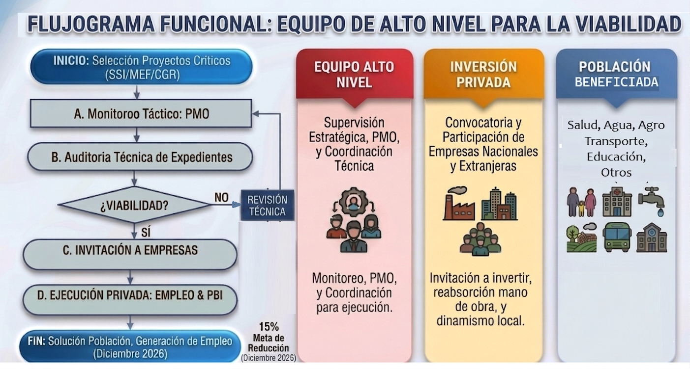

I. Proyección Económica y Laboral
Generación de Empleo y PBI
La viabilización de los proyectos estratégicos permitiría reabsorber mano de obra calificada y dinamizar las economías locales a través de servicios de subcontratación y logística mediante la inversión privada.
450,000
Empleos Directos
1,200,000
Empleos Indirectos
Crecimiento del PBI
+2.4%
Incremento adicional en la economía del Perú por reactivación.
II. Matriz de Impacto en la Población (4,200,000 Afectados)
Brecha de Salud
4,200,000 Ciudadanos afectados
Por la paralización de 287 hospitales y centros de atención primaria.
Vivienda y Saneamiento
1,800,000 Sin Agua
Afectación directa por 514 proyectos de saneamiento detenidos por fallas en expediente técnico.
Pérdida Agrícola
350,000 Hectáreas sin riego
Retraso sistémico en proyectos de irrigación en la Macro Región Sur.
Transporte
3,400,000 Usuarios diarios
Impacto crítico por 631 obras viales y puentes inconclusos.
Educación
2,880,000 Alumnos afectados
325 colegios paralizados, operando con infraestructura precaria.
Otros Sectores
874 Proyectos detenidos
Incluye seguridad (comisarías), cultura y espacios públicos a nivel nacional.
III. Causas Principales de Paralización
Distribución Estadística por Motivo (N° Obras)
Arbitrajes
Controversias legales que impiden la continuidad de ejecución.
Falta de Presupuesto
Carencia de asignación financiera para el ejercicio fiscal.
Expediente Deficiente
Errores técnicos de diseño que requieren modificaciones estructurales.
Abandono
Incumplimiento de contrato por parte del ejecutor privado.
Otros Motivos
Conflictos sociales, eventos climáticos y procesos administrativos.
Distribución Sectorial
IV. Matriz Técnica Nacional (25 Regiones)
Haz clic en los encabezados para ordenar los datos.
| Departamento | Sector Predominante | N° Obras | Inversión (S/ MM) | Riesgo |
|---|
V. Próximos Hitos: Timeline 2026
Censo Nacional & Auditoría
Censo Nacional de Maquinaria Paralizada y activos abandonados. Auditoría técnica de los 500 expedientes de mayor presupuesto.
Digitalización & Transparencia
Lanzamiento de la plataforma "Obra Transparente". Implementación de seguimiento satelital en tiempo real para proyectos críticos.
Cumplimiento de Metas
Meta de Reducción del 15% en el stock total de obras paralizadas. Entrega del primer lote de infraestructuras reactivadas (Quick-Wins).
VI. Estrategias de Solución Propuestas
Equipo de Alto Nivel para la Viabilidad
Creación de un comité especializado de alto nivel para el monitoreo y seguimiento de los proyectos paralizados. Su objetivo principal es dar viabilidad e invitar a empresas nacionales y extranjeras a invertir y ejecutar las obras. Esta acción estratégica generará miles de puestos de empleos directos e indirectos, solucionando los grandes problemas de la población y reactivando la economía en todo el país.

A. Arbitraje Fast-Track
Implementación de cámaras especializadas para resolver controversias contractuales en menos de 90 días, atacando la causa del 26% de las paralizaciones registradas.
B. Centralización Técnica (PMO)
Traslado de proyectos críticos de gobiernos locales hacia unidades ejecutoras con mayor capacidad técnica y operativa, reduciendo expedientes deficientes.
C. Seguro de Continuidad
Exigencia de nuevas garantías y pólizas de caución que permitan la sustitución inmediata de contratistas en caso de abandono de obra o resolución de contrato.